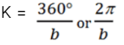
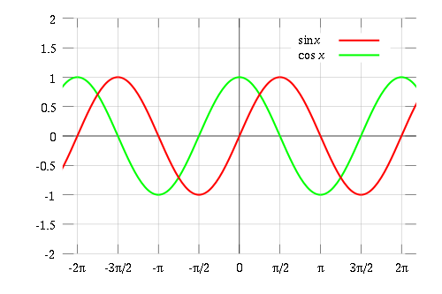

2. Chapters 5-6

This poster will cover:
- Trigonometric Ratios (Chapter 5)
- Sinusudal Functions (Chapter 6)
Trigonometric Ratios (Chapter 5):
In this chapter, you learnt:
- Trigonometric Ratios/Identities:
- Finding angles/sides of a right triangle (SOH-CAH-TOA)
- In the Cartesian plane, they can also be expressed in terms of x, y and r (radius).
- Special Triangles to Memorize
- The 45-45-90 Triangle and 30-60-90 Triangle.
- These triangles can determine the exact values of trigonometric ratios for 30, 45 and 60 angles.
Tricks:
- In a right triangle; if 1 side is half that of the hypotenuse, the opposite angle of that 1 side is 30°.
- In a right triangle; if 2 sides are the same, the 3rd side has both angles as 45°.
- Trigonometric Ratios for >90°
- Angles/terminology on a Cartesian plane:
- Principal Angle: A positive angle from 0° to 360°.
- Positive Angle: An angle starting from the positive x-axis, going counter-clockwise.
- Negative Angle: An angle starting from the positive x-axis, going clockwise.
- Related Acute Angles (CAST Rule):
- Related Acute Angle: The acute angle in between the terminal arm and the x-axis (quadrants 2, 3 and 4 only).
- CAST Rule to find the related acute angle:
- A >90° angle can be simplified to its related acute angle. Use the CAST rule to determine if that trigonometric ratio (sin, cos, tan etc.) should have a plus or minus sign at the front.
- C: In Q4, only Cosine is positive.
- A: In Q1, all ratios are positive.
- S: In Q2, only Sine is positive.
- T: In Q3, only Tangent is positive.
- Sine Law:
- The sine law explains that in a triangle, all ratios between a side and the sine of it’s opposite angle are equal. Can only be used in SSA or AAS
Sine Law Equation:
Sine law may produce 0, 1 or 2 triangles with SSA, so below are possible cases:
If the given angle is acute:
- Triangle (a < h)
- 1 Triangle (Right triangle; a = h)
- 1 Triangle (a > b)
- 2 Triangles (h < a < b)
If the given angle is obtuse:
- No Triangle (a < b or a =b)
- 1 Triangle (a > b)
- Cosine Law:
- If SAS or SSS is known in a triangle, the Cosine law can be used to find the unknown values.
- 3D Trigonometry
Tips on how to solve 3D problems:
- For right triangles, use primary trigonometric ratios and Pythagorean theorem.
- For non-right triangles, use the sine law/cosine law.
Sinusudal Functions (Chapter 6):
In this chapter, you learnt:
- Periodic Functions
What is a periodic function?
- A periodic function when graphed has a regular repeating pattern over regular intervals.
- Functions with sine/cosine as parents are periodic functions.
- The sine function measures the height from the x-axis during rotation, whilst the cosine function measures the horizontal distance from the y-axis during rotation.
- Sine/Cosine Functions
Sine Function: f(x) = a*sin (k(x - d)) + c
Cosine Function: f(x) = a*cos (k(x - d)) + c

Graphing Properties:
- Domain: (-∞,+∞)
- Range: [-|a|, +|a|]
- Max: +|a|
- Min: -|a|
Sine/Cosine Starting Point:
- The parent sine function starts at (0,0), whilst the parent cosine function starts at (0, 1).

- Graphing Sinusoidal Functions with Transformations
How to graph sinusoidal functions, the easy way:
- Divide the period (k) into quarters, and find 5 points:
- Finally draw in the sinusoidal line.